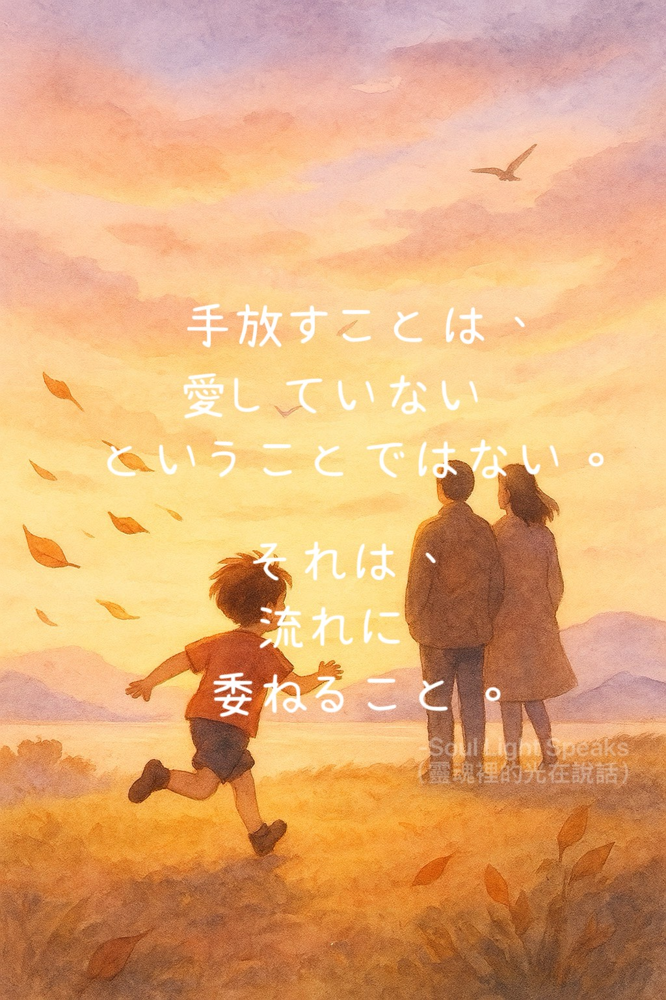

手放すことは、
愛していない
ということではない。
それは、
流れに
委ねること。
愛していない
ということではない。
それは、
流れに
委ねること。
愛のかたちの中で、
最も尊いものは
守ることではなく、信じること。
手放すことは、
信頼であり、
ひとつの信仰でもある。
親はいつも、
深く愛しすぎてしまう。
子どもが傷つくことや、
道を間違えることを恐れているから。
「ゆっくりでいい、
焦らなくていい、
無事でいてほしい」
と、何度も言い聞かせる。
それでも、子どもの心は
風を求めている。
もっと速く進みたい、
自由の鼓動を感じたい。
たとえその自由が、
転ぶことや傷を
伴うとしても。
もしかすると、
親はいつか学ばなければならない。
手放すことを。
すべてを、
あるがままに委ねることを。
人生は、
脚本でもあり、試練でもある。
人はそれぞれ、
自分の向き合うべき問いと、
踏み込むべき落とし穴を持っている。
成長とは、
間違いを避けることではなく、
その中で自分になっていくこと。